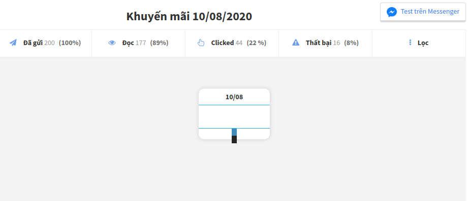

Gửi broadcast
Gửi broadcast là gửi một kịch bản theo thời gian cài đặt từ trước cho những khách hàng thông qua Messenger (tương tự email marketing).
Trường hợp sử dụng Broadcast là khi bạn cần gửi tin marketing, chăm sóc hay bán hàng. Thông thường tỷ lệ mở tin nhắn là 66.06% – 98.56% và tỷ lệ nhấp chuột là 8.40% – 72.73%.
Chú ý: Nếu bạn không gửi được Broadcast thì có thể do đã vượt mốc 1,000 tin nhắn mỗi tháng cho tài khoản Free, bạn phải chờ qua tháng sau hoặc nâng cấp tại đây nhé.
1. Tạo broadcast
2. Tạo kịch bản
Bạn nên sử dụng spintax để giúp tạo ra nhiều nội dung khác nhau kết hợp với chào các buổi trong ngày để tạo thiện cảm cho khách hàng. Ví dụ:
Chào {{DAYTIME()}} may mắn!
Chúc mừng {{full_name}} đã {được tặng|được nhận|may mắn có} 1 phần quà trị giá 299k từ shop
Bạn có thể đọc thêm bài hướng dẫn chi tiết tại đây.
3. Cài đặt và gửi
3.1 Đối tượng
Những khách hàng sẽ nhận được kịch bản marketing từ bạn, thông thường sẽ lọc điều kiện bằng Thẻ đã gắn từ trước.
3.2 Loại tin nhắn, có 3 loại
- Tin nhắn đăng ký: Là tin nhắn mà bạn có thể gửi đến bất kỳ khách hàng ở bất kỳ thời gian nào (không phân biệt trong hay ngoài 24h). Nhưng chú ý bạn không được gửi tin nhắn quảng cáo ở hội thoại mở đầu, bạn chỉ có thể gửi tin nhắn quảng cáo ở hội thoại thứ 2 trở đi (đây là quy định của facebook). Trong trường hợp bất khả kháng cần gửi tin nhắn kèm quảng cáo thì vui lòng tham khảo hướng dẫn này.
- Tin nhắn OTN: Là tin nhắn mà bạn có thể gửi đến bất kỳ khách hàng ở bất kỳ thời gian nào (không phân biệt trong hay ngoài 24h). Bạn có thể gửi cả tin quảng cáo nhưng phải gửi đúng chủ đề mà khách hàng đã đăng ký với Bot, đây là tin nhắn được khuyến khích dùng nhiều nhất vì sự an toàn, nếu muốn hiểu hơn về OTN thì vui lòng tham khảo hướng dẫn này.
- Tin nhắn quảng cáo: Là tin nhắn bạn chỉ gửi được cho khách hàng trong vòng 24h từ lúc khách hàng đã chat với Bot của bạn. Với loại tin nhắn này thì bạn có thể thoải mái gửi quảng cáo. Là tin nhắn bạn chỉ gửi được cho khách hàng trong vòng 24h từ lúc khách hàng đã chat với Bot của bạn. Với loại tin nhắn này thì bạn có thể thoải mái gửi quảng cáo.
Ví dụ sử dụng tin nhắn đăng ký: thay vì gửi một tin nhắn là “Chúng tôi sắp mở bán 100 pizza miễn phí, đăng ký ngay hôm nay” thì bạn có thể tạo thành 3 hội thoại. Hội thoại đầu tiên là hỏi người dùng có quan tâm đến chương trình miễn phí, và kèm 2 Nút Bấm là Có và Không. Nếu Có thì sẽ gửi tiếp mã miễn phí, còn nếu Không thì gửi lời cảm ơn.
3.3 Giới hạn
- Gửi từ khách hàng thứ [x] đến khách hàng thứ [y]. Được dùng để chia nhỏ số lần gửi nhằm tránh spam. Ví dụ, bạn có 9,000 khách hàng và muốn mỗi ngày chỉ gửi tin broadcast đến 3,000 khách hàng thì có thể chọn Gửi từ khách hàng thứ [1] đến khách hàng thứ [3000]
- Số tin nhắn gửi mỗi phút [x]. Cũng được dùng để chia nhỏ số lần gửi nhằm tránh spam.
3.4 Thời gian gửi, có 3 mốc
- Gửi ngay: Kịch bản sẽ được gửi ngay từ lúc tạo, nếu số khách hàng nhận tin nhắn lớn thì thời gian nhận có thể kéo dài vài phút.
- Gửi sau: Bạn chỉ muốn khách hàng nhận được tin khuyến mãi vào 7h sáng hôm sau thì đây là chức năng dành cho bạn.
- Gửi lặp lại: Kịch bản sẽ được gửi lặp lại theo thời gian cài đặt cụ thể (ví dụ theo từng tuần), rất phù hợp nếu bạn muốn cung cấp thông tin thường xuyên cho độc giả của mình.
Trước khi gửi nên Test trên Messenger để xem trước chiến dịch sẽ hoạt động như thế nào.
4. Xem thống kê kết quả

Sau khi Broadcast gửi thành công sẽ có 4 chỉ số thống kê như sau:
- Gửi: Số lượng tin nhắn đã gửi đi từ Broadcast, bao gồm cả thành công và thất bại.
- Đọc: Số lượng khách hàng đã đọc tin nhắn được gửi từ Broadcast.
- Clicked: Số lượng khách hàng đã click vào bất kỳ link hoặc nút bấm trong tin nhắn được gửi từ Broadcast.
- Thất bại: Số lượng tin nhắn không gửi được đến khách hàng vì lý do nào đó. Hãy bấm vào để xin chi tiết lý do để có giải pháp tiếp theo (hủy chiến dịch hoặc gửi lại chiến dịch).
- Lọc: Xem lại đối tượng cần gửi gồm bao nhiêu khách hàng và thỏa mãn điều kiện gì.
Bạn có bất kỳ câu hỏi nào liên quan đến tính năng Gửi broadcast trong AhaChat? Bạn muốn khởi chạy chiến dịch tiếp cận khách hàng của mình bằng Chatbot với một số lời khuyên chuyên môn từ Đối tác tiếp thị của Facebook? Đừng ngần ngại liên hệ với chúng tôi để có câu trả lời nhanh nhất và hiệu quả nhất! Tận hưởng công cụ chatbot miễn phí của chúng tôi mà không cần phải trả bất kỳ chi phí nào!